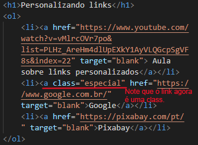

Para conseguir o efeito acima utilize o código abaixo:

Estes elementos dão mais poder às css, por isso precisamos aprender a utilizá-los. Quando utlizamos id(#) e class(.) precisamos saber fazer as correspondências entre um e outro no corpo da página em HTML e dentro da folha de estilo css. Para isso utilizamos as regras abaixo:

Note que o link agora é uma class e ao fazer isso nós podemos dar uma formatação diferenciada a este link e a todos os que tiverem a denominação "especial" como no exemplo.
Dentro da folha de estilo css colocamos o item denominado como "especial" precedido de ponto e dois pontos ao final da palavra. Assim o navegador entende que se refere a uma formatação especial do seletor "especial". Como na imagem abaixo: